GEMO3DMonocular 3D Vehicle Detection with Deep-Learning Perception, Camera Geometry and Projection-Height Ratio Compensation
TL;DR GEMO3D turns a single RGB image into a 3D vehicle box by correcting pinhole depth with a class-specific rank-1 projection-height ratio model.
165 matched vehicle instances in CARLA evaluated by all four methods · next best: MonoDETR.
Abstract
Monocular 3D vehicle detection must infer depth from a single image. The height of a detected 2D box follows the visible silhouette, so it differs from the projected height of the vehicle’s 3D centerline — a bias that changes with viewing angle, distance and vehicle shape. GEMO3D combines learned detection, classification and orientation with camera geometry, and corrects this bias with a vehicle-specific rank-1 projection-height ratio model estimated from the viewing angle and initial pinhole depth. The corrected depth drives 3D box reconstruction with ground-plane and reprojection constraints, without ground-truth depth at inference.
Method
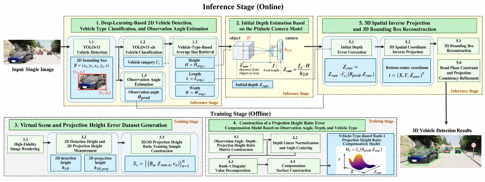
Core contribution
Rank-1 Projection-Height Ratio Model
A 2D box follows the silhouette, so its height differs from the projected 3D centerline by a ratio r = h2D / h3D,proj that varies with viewing angle and depth. GEMO3D learns this ratio surface per vehicle class and compresses it with a rank-1 SVD.
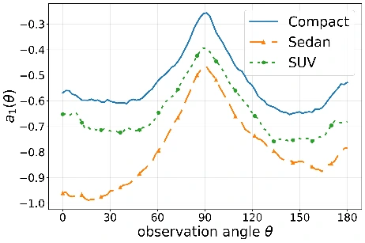
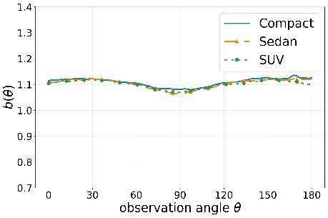
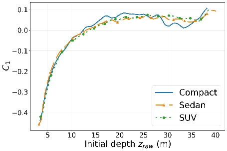
Compact 95.11 · Sedan 98.55 · SUV 98.94
Blender renders · no real-road 3D labels
Results
165 matched vehicle instances in a CARLA sequence, detected by GEMO3D, MonoAMNet, MonoDGP and MonoDETR.
| Method | Mean depth bias (m) | Depth RMSE (m) ↓ | Yaw error (°) ↓ | 3D center error (m) ↓ | BEV IoU ↑ | FPS ↑ |
|---|---|---|---|---|---|---|
| MonoAMNet | −2.29 | 5.58 | 18.97 | 2.76 | 0.46 | 40.23 |
| MonoDGP | −1.22 | 1.40 | 1.23 | 1.25 | 0.46 | 24.71 |
| MonoDETR | −0.02 | 0.33 | 1.73 | 0.28 | 0.70 | 21.34 |
| GEMO3D ours | −0.06 | 0.27 | 2.12 | 0.25 | 0.82 | 31.12 |
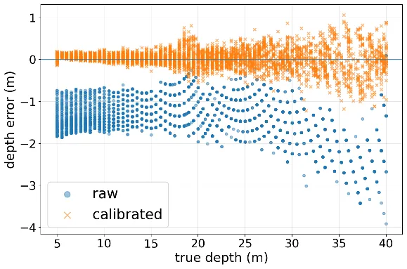
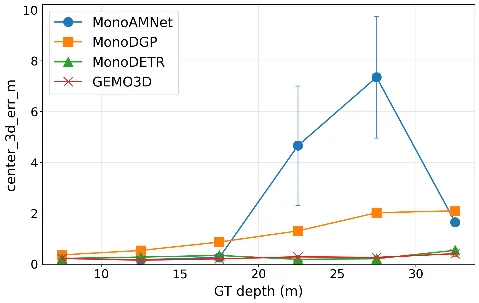
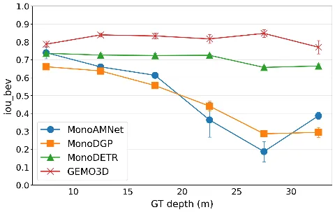
2D detection → 3D box
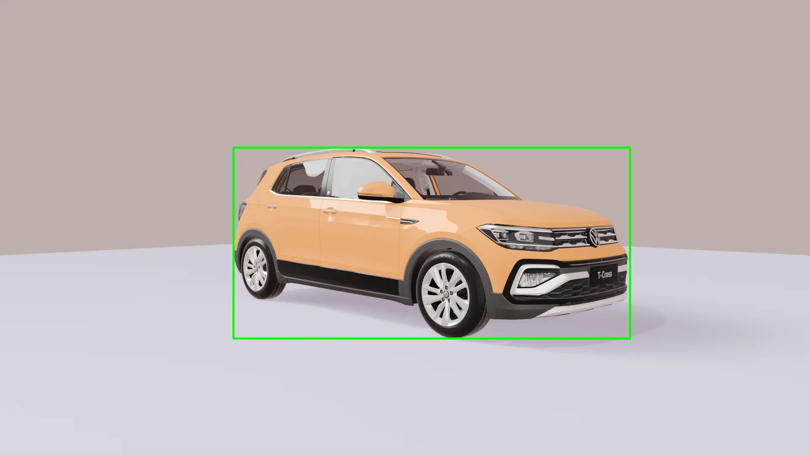
3D box2D detection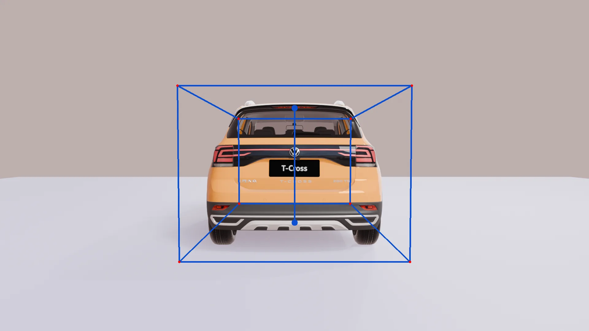
Predictions at 10, 20 and 30 m
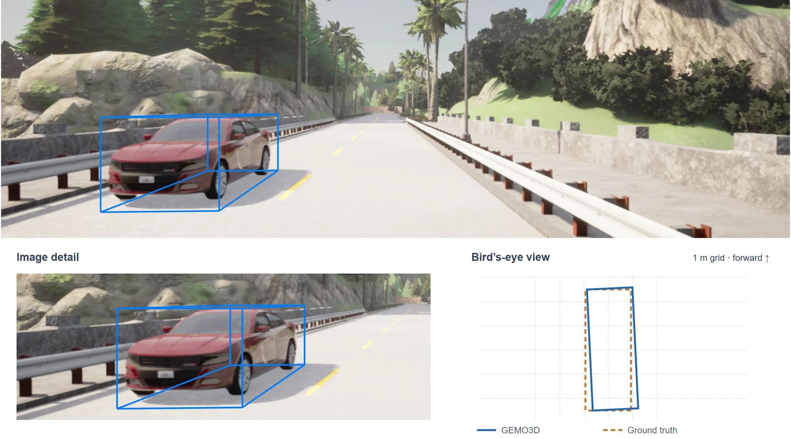
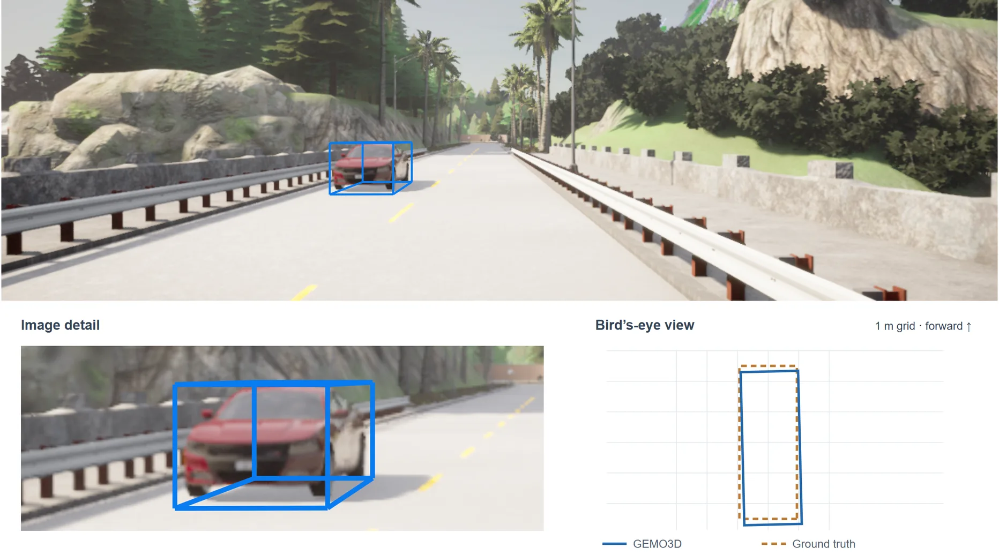
Blue: GEMO3D. Bird’s-eye view: orange dashed ground truth, 1 m grid. Error bars: 95% CI over 5 m depth bins.
The 10, 20 and 30 m examples come from an available 128-instance common-pair subset; the quantitative table and depth plots use the 165-instance evaluation.
The table reproduces the manuscript. Downloadable CSV summaries were recomputed separately from the 165 matched instances; some values differ, including MonoDETR yaw error (paper 1.73°, CSV 1.79°).
Evaluation scope: a CARLA bidirectional-road scenario. Pinhole initialization assumes a level camera and road; severe occlusion, small distant boxes, class errors, slopes and camera pitch remain limitations or future work.
BibTeX
@misc{chang2026gemo3d,
title={GEMO3D: Monocular 3D Vehicle Detection with Deep-Learning Perception, Camera Geometry and Projection-Height Ratio Compensation},
author={Chang, Yu-Chiao and Kuo, Chunghui and Yang, Chieh-Lun and Chang, Ing-Chau},
year={2026},
note={CVGIP 2026, SS09-08}
}